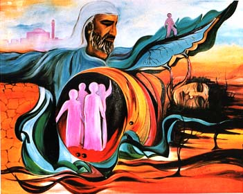
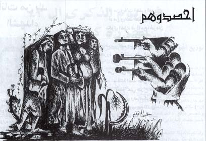
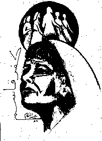

|
Title unknown |

"I take you by your hands" |
Why were you in prison? "I was accused (by the Israelis) of being a member of one of the Palestinian resistance organization and I was put in administrative detention which meant that I had no recourse and could have remained in prison forever. You never know if and when you would get out. They accused and imprisoned all who were activist." (see note below)
When did you begin drawing about massacre that was executed by the Israelis? "I began drawing about the Kafr Qasem massacre of 1956 immediately after it happened and we did posters and wrote on the walls and I was politicized by the massacre. The teachers did not encourage me. Teachers always fear losing their jobs and discourage us. They are dogs in the political sense, not in all ways of course."

Tell us about your first show? "In the 8th grade they made an exhibition. I did not see it. I did a drawing which took first prize. They told me about it. I had done a drawing which was an assignment from the teachers. It was a drawing about transportation. I was 13 years old then." (and of course there was no transportation in Kafr Qasem at that time nor was there electricity or running water. Those were niceties that the Israelis did not provide the Arab villages even though they taxed them heavily.) "At age 14 I began drawing about the massacre and the Israeli police used to come and confiscate all my drawings. They entered my home 3 to 4 times and took my drawings."
"I am Calling You"
Title unknown
What materials did you use then? "I used pencil and water colors. I used to go without 'tasreeh' (official written permission from the Israeli authorities for movement that all Palestinians had to have) to the Petah Tikwa (an Israeli town) and buy a box of water colors and it lasted me for a year."
"In prison I did a lot of drawings and the Israeli jailers would not let me send them out without their permission and they did not give such a permission. They came and took all the drawings which I made. They promised to give them back to me but at the end when they let me out they refused to give them back to me. My drawings were not returned. They still have them. I did not draw about the massacre or about Palestinian politics because they would have made life impossible for me. So I drew about Viet Nam."
I asked Abdel Tamam if he would not go back and demand the drawings from the Israeli prison. He said: "I cannot go back to that place. I had a lot of pain there and it is impossible for me to go back to it voluntarily." I then asked him if he had children and if he would not request them at a time in the future to go demand his drawings back from the Israeli government. He responded saying: "Those are past times and they are gone and it is best to forget them."

"Harvest Them"
"Harvest Them" was the call used by the Israeli executioner when he gave the order to his men to open fire at unarmed workers returning home from work anticipating a peaceful night at home. It is interesting that Abdel Tamam does not give the Israeli executioners the dignity of having heads on their shoulders.
I asked Abdel Tamam if he ever studied art. He said: "I did a course in 1972. I could not take the certificate because the Israeli Mukhabarat (secret service) threatened me." I asked him how they knew that he was doing the course and he responded that they watch us all the time and know all that we are doing. He continued: "The course was in Tel Aviv in a place called Studio Cesar. They taught me graphic design. I went for seven months. I only gained from them my own self confidence. They assigned us design projects and I was successful in these projects." Then Abdel Tamam proceeded to describe the assignments in surprising detail revealing a crisp memory for events and details and a power of accurate description.
When was your first exhibition? "My first exhibition was a group show in Beit-Lahem (Bethlehem) in 1977. The Paintings were about our Palestinian heritage and I had a great response from people in Beit-Lahem. I had a painting of a church and a mosque, both broken but resting on each other, and together they formed (they appeared like) a Palestinian woman whose face showed troubles. I exhibited in Nasreh (Nasareth), in Shafa Amer, in Jaybe, and in Petah Tikvah and in Tel Aviv. In Tel-Aviv they found what I did important. The Jews, that is, they consider me the other side and that is interesting to them and they like to see the other side."

"Kafr Qasem"

Portrait of Abdel Tamam
October 29, 1999
Title unknown
Have you ever exhibited outside Palestine? "I was asked to exhibit in the Khaleej (The Gulf) in Qatar. I did not know how to handle the fact that Qatar has no official connection to Israel. I have no organization to help me or represent me. I was worried about the official Israeli reaction and its possible negative and destructive consequences on my life."
For how much do you sell your work? "I sell my work only to the person I respect and if so it happens, then there is no disagreement."
Did you ever teach and would you teach? "Many students request to study with me and I can't do it due to lack of materials and space."
Did you know of any other artists who were painting in Palestine48 under the Israeli Government? "There was a communist artist who drew for Al-Itihad, the communist newspaper. He drew abstract caricatures. Other than him I do not know any others. The Communism Party protected him."
Can I put your pictures on the Internet on my web pages? "You can use them in any way but not for profit. I make my paintings for my people and want them used for that purpose."
Note: All items in quotes are clarifications added by the interviewer.
Select from the following menu representing the entire studio:
My Grandmother... The Town of Beisan... The Arab City of Jerusalem... Sabah Told Me... My Home in Yafa... Khader Told Me... Our Students... A Taxi Ride in Bethlehem... Written by Doctor Fathiye Saudi... Hasan Told Me... A Visit to Kafr Qasem... The Artist of Kafr Qasem... The Massacre at Kafr Qasem (not yet ready)...)
Tayseer Barakat, painter... Rana Bishara, painter and installation artists... Sari Khouri, painter... Abdel Tamam, painter... Vera Tamari, ceramist and painter... Adnan Yahya, painter and graphic artists...
="pointer-events:none;cursor:default;" href="http://www.art.net/">
![[Art on the Net]](/images/artnet_button.gif)